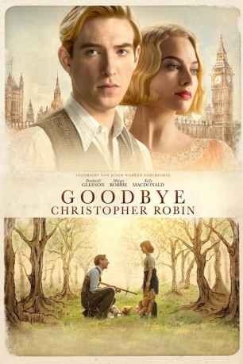

#8308 Goodbye Christopher Robin
 
 IMDB-Wertung: 7.1 / 10
IMDB-Wertung: 7.1 / 10  Tomatometer: 63
Tomatometer: 63  Metascore: 54
Metascore: 54 
Nachdem A.A. Milne (Domhnall Gleeson) im Ersten Weltkrieg gedient hat, kehrt er zu seiner Frau Daphne (Margot Robbie) zurück. Wenig später kommt ihr Sohn Christopher Robin (Will Tilston) zur Welt. Der kleine Junge liebt es, mit seinen Stofftieren zu spielen, zu denen auch ein Teddybär mit Namen Winnie Puuh, ein kleines Schweinchen, ein Tiger und ein Esel zählen. Da Milne ihm dabei oft Gesellschaft leistet, wird der Schriftsteller schon bald zu einem neuen Buch inspiriert, in dem Christopher Robin und seine Plüschfreunde im Mittelpunkt der Geschichte stehen. Das neue Werk wird zu einem riesigen Erfolg und von fast jedem Kind in Großbritannien innig geliebt. Doch der Ruhm hat auch seine Schattenseiten und die kleine Familie samt Christophers Nanny Olive (Kelly Macdonald) muss lernen, damit umzugehen…
Jahr: 2017
Dauer: 107 Minuten
FSK: 6
Land: England Studio: 20th Century FoxTonspuren: DTS - ,
Untertitel: Deutsch, Englisch,
Auflösung: 1080p (1920x1040) Größe: 8437 MB
Genre: Familie, Geschichte, Biographie
Regisseur: Simon Curtis
Drehbuch: Frank Cottrell Boyce
Soundtrack: Carter Burwell
Darsteller:
 Margot Robbie als Daphne Milne
Margot Robbie als Daphne Milne Domhnall Gleeson als Alan Milne
Domhnall Gleeson als Alan Milne- Will Tilston als Christopher Robin Aged 8
- Alex Lawther als Christopher Robin Aged 18
 Stephen Campbell Moore als Ernest
Stephen Campbell Moore als Ernest Richard McCabe als Rupert
Richard McCabe als Rupert Geraldine Somerville als Lady O
Geraldine Somerville als Lady O Kelly Macdonald als Olive
Kelly Macdonald als Olive Phoebe Waller-Bridge als Mary Brown
Phoebe Waller-Bridge als Mary Brown- Allegra Marland als Fan 1
 Mark Tandy als Portrait Photographer
Mark Tandy als Portrait Photographer Richard Dixon als MC at Pageant
Richard Dixon als MC at Pageant Shaun Dingwall als Alfred
Shaun Dingwall als Alfred- Nicholas Richardson als Newspaper Man
 Richard Clifford als Toy Shop Manager
Richard Clifford als Toy Shop Manager- Harper Gray als Kid 3
- Simon Williams als Zoo Director
- Victoria Bavister als Mother at Zoo
 Gintare Beinoraviciute als Lady O's Party Guest (uncredited)
Gintare Beinoraviciute als Lady O's Party Guest (uncredited)- Jamie Body als Bright Young Thing (uncredited)
 Tom Dab als NY / Lady O's Guest (uncredited)
Tom Dab als NY / Lady O's Guest (uncredited)- Matthew Di Liello als WW1 Soldier (uncredited)
- Elisa Hayrapetyan als Waltz Dancer (uncredited)
 Honey Holmes als Lady O's Guest (uncredited)
Honey Holmes als Lady O's Guest (uncredited) Adam Lazarus als Theatre Goer (uncredited)
Adam Lazarus als Theatre Goer (uncredited)- Jason Matthewson als Theatre Patron (uncredited)
- Christopher McMullen als Homeless Man (uncredited)
- Nico Mirallegro als Cooper (uncredited)
 Bernardo Santos als WW1 Soldier (uncredited)
Bernardo Santos als WW1 Soldier (uncredited)- Beatrice Stein als Dancer (uncredited)
- Arthur Wilde als Cameraman (uncredited)
- Gemma Wilks als Dinner Party Guest (uncredited)
- Vicki Pepperdine als Betty
- Mossie Smith als Sharon the Midwife
- Stanley Hamlin als Christopher Robin Aged 6 Months
- Dexter Hyman als Christopher Robin Aged 3 Years
- Sonny Hyman als Christopher Robin Aged 3 Years
- Sam Barnes als The Times Photographer
- Ann Thwaite als Pageant Dignitary
- Louis Harrison als Parade Child
- Kevin Millington als American Chap
- Rolan Bell als American Cop
- Mark McKerracher als Groupie 1
- Amber Batty als Groupie 2
- Grace Curtis als McGovern Sister
- Matilda Curtis als McGovern Sister
- Lance C. Fuller als Groupie 3
- Simon Connolly als Radio Host
- Sarah Jayne Butler als Winning Mum
- Cameron Lane als Kid 1
Datei: X:\2017(G-M)\Goodbye Christopher Robin (2017, FSK6, 1920x1040).mkv seit 20.02.2018
Festplatte: HD 2017(A-Z)-2018(A-F)
 Es gibt insgesamt 148 Filme in der Gruppe '2017(G-M)'
Es gibt insgesamt 148 Filme in der Gruppe '2017(G-M)'